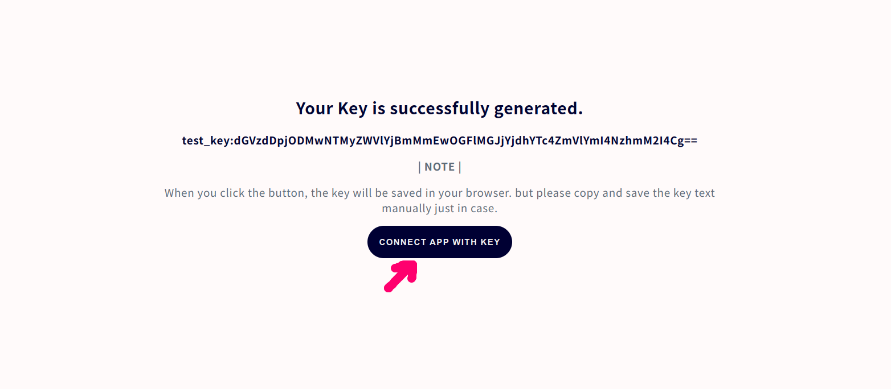
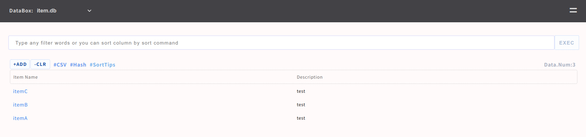

Quick start for ubuntu+apapche2
This is a quick start guide for ubuntu&apache2. of course you can choose other linux distributor, but so far our recommendation is ubuntu.
Setup Env@ubuntu
# addd user
sudo useradd -s /sbin/nologin small-shell
# update apt list and install curl
sudo apt update
sudo apt install curl
# install httpd (e.g. apache)
sudo apt install apache2
sudo a2enmod cgid
#sudo systemctl start apache2
sudo service apache2 start
sudo update-rc.d apache2 defaults
# install php library, it will be used for url encoding (required)
sudo apt install php
##install jq
sudo apt install jq
Installation
# install
cd /usr/local
sudo git clone https://github.com/small-shell/small-shell.git
sudo chown -R small-shell:small-shell /usr/local/small-shell
sudo chmod 755 /usr/local/small-shell/adm/gen
Sudo setting
# change sudo setting
sudo visudo
## add to last line
## sudo setting for httpd user (e.g.) www-data for apache2
www-data ALL=(small-shell) NOPASSWD: /usr/local/small-shell/bin/*, /usr/local/small-shell/sbin/*
Generate Databox
Then Let's generate databox as the data store of WEB APP. DATA shell details are in DATA shell tour
sudo /usr/local/small-shell/adm/gen -databox
#-> dialog will be started
Note
You can exit dialog anytime with ctrl + C
Dialog
In this expamle, "item_name" is set as priary key.
Databox Name: item.db
primary_key(col1): item_name
primary_key label: Item Name
Add more columns to the databox? (yes | no): yes
key(col2) name: description
key(col2) label: Description
Data Type (text | select | radio | checkbox | email | num | tel | date | date-time | url | textarea | file | pdls | mls): text
Set this as required? (yes | no): yes
Add more columns to the databox? (yes | no): no
Data box will be generated by following order, please check it
-----------------------------------------------------------------
Databox Name:item.db
#primary_key
name="item_name"
label="Item Name"
type="text"
option="required"
#key(col2)
name="description"
label="Description"
type="text"
option="required"
-----------------------------------------------------------------
Is it OK? (yes | no): yes
Generate Base APP
Once at least 1 databox is ready, please generate APP shell
APP shell details are in APP shell tour
sudo /usr/local/small-shell/adm/gen -app
Type of APP (1.BASE | 2.FORM | 3.SCRATCH): 1
Type of server (1.small-shell WEB srv | 2.other WEB srv): 2
#-> Dialog will be started, for making Base APP
# Dialog result
--------------------------------------------------------------------------
APP Type: 1.BASE
Protocol: https
APP Exec User: www-data
Root Directory: /var/www
CGI Directory: /usr/lib/cgi-bin
Server: ec2-XX-XX-XX-XX.us-west-2.compute.XXXX.com
Access URL: https://ec2-XX-XX-XX-XX.us-west-2.compute.XXXX.com/cgi-bin/
--------------------------------------------------------------------------
Add symlink on ubuntu
If you are using ubuntu and apache2, please add symlink by answering "yes" in the dialog.
www dir must have relation with CGI dir. Is it OK to make symbolic link on /usr/lib ?
following command will be executed
-----------------------------------------------------------------
ln -s /var/www/bin /usr/lib/bin
ln -s /var/www/descriptor /usr/lib/descriptor
ln -s /var/www/tmp /usr/lib/tmp
-----------------------------------------------------------------
(yes | no): yes
Add user
Following example is adding user name "test", "test" can initialize and get base64 key by accessing the URL that is generated by ops command.
sudo /usr/local/small-shell/adm/ops add.usr:test
By the way, this URL can be accessed only 1 time. please inform to the user.
-----------------------------------------------------------------
Key initializing & generating URL for test on Base APP is here
-----------------------------------------------------------------
https://$server/cgi-bin/auth.base?initialize=*****26fd2,4c5a2ae68d20e530b4ce457c71eae42590135268e1fb933a945f7e188678ccf4
End user can access to the Base APP by click the button and key will be stored to local storage of browser. 
Connect to the Base APP
Image of authentication page of Base APP is as following. the access URL will be shown in the end of the gen dialog but basically it will be "https://$FQDN/base". key will be inserted automatically if it's stored in local storage.

Then end user can use following APP features as default. ofcourse you can make your own APP,
please see detail on Create Scratch APP
Base APP FEATURES
- Push or Get datas thorough simplest UI
- Can use "And" search using space [e.g. word1 word2]
- Multi type of sort using sort command
- Serch using specific key of column, [e.g key{wordA}]
- Download search result by CSV format
- Import Data with CSV format
- Define number of line per page [e.g #line:20] [e.g word #line:20]

+ Command Console
- Analyze data using linux commands [grep, wc, awk, uniq, sed, tail, head, nl, sort, cut ..]
- Search log with freewords by adding tag [e.g. word1 word2 #log]
- Show statistics #stats, you need to define statistics job. Please see the pyshell for further details.

Re-generate initialize URL
If end user lost their key, you can re-generate initialize URL by following command. In this example, admin will re-generate initialize URL for user name "test"
sudo /usr/local/small-shell/adm/ops initialize.usr:test
SE linux setting change
If you are using SE linux, pelase change to permissive mode and then please make specific rule for SE linux before enforcing.
## check SE linux
sestatus
## if current mode is enforcing. please change to permissive. then please make rule later.
sudo vi /etc/selinux/config
SELINUX=permissive
##reoobt
sudo reboot
Update to latest version
You can update small-shell very easily. this is exmaples of update procedure.
cd /var/tmp
sudo git clone https://github.com/small-shell/small-shell.git
sudo \cp -Rf small-shell/* /usr/local/small-shell/
sudo rm -rf small-shell
sudo /usr/local/small-shell/adm/gen #renew global.conf
Then please re-generate web app using gen command if needed.